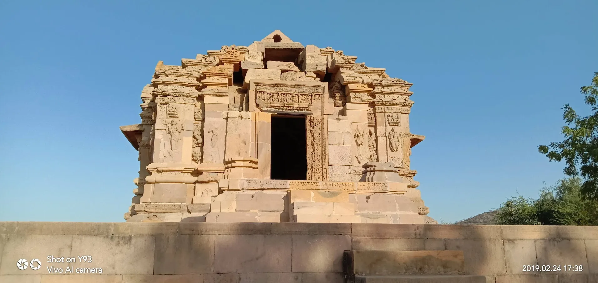

Discover the secret treasures of Kutch that only the locals know. From serene wetlands to ancient temples, these hidden gems offer authentic experiences beyond the crowds. Each location tells a unique story of Kutch's rich heritage, natural beauty, and spiritual significance.
Nature & Wildlife
Untouched natural wonders

Chaari Dhand
A seasonal wetland sanctuary that transforms into a haven for migratory birds during winter. Witness thousands of flamingos, cranes, and other exotic species. 60km from Bhuj. Best visited Oct-Mar.
Flamingo Colony
During peak migration season, witness spectacular flamingo colonies at Chaari Dhand. Early morning visits offer the best photography opportunities with golden light.
Heritage & History
Ancient temples and archaeological sites

Kotay Sun Temple
Ancient temple ruins dating back to the 12th century Solanki dynasty. Features exquisite stone carvings and architectural marvels. 35km from Bhuj. Best at sunrise or sunset.

Kadia Dhrow
A hidden hill fortress with panoramic views. Ancient watchtower ruins offer stunning sunset vistas across the Kutch landscape. Perfect for history enthusiasts.
Tips for Exploring Hidden Gems
🗺️ Hire a Local Guide
Local guides know the best routes, hidden spots, and can share fascinating stories about each location.
🌅 Early Morning Visits
Best light for photography, cooler temperatures, and fewer crowds. Many birds are active at dawn.
💧 Carry Essentials
Water, snacks, sun protection, and basic first aid. Remote areas may have limited facilities.
📱 Offline Maps
Download maps in advance. Network connectivity can be spotty in remote areas of Kutch.
What to Bring
- Binoculars : Essential for birdwatching at Chaari Dhand and other wetlands.
- Camera with Zoom Lens : Wildlife can be distant; a telephoto lens is invaluable.
- Comfortable Footwear : Many sites require walking on uneven terrain.
- Sun Protection : Hat, sunglasses, and sunscreen are must-haves.
- Light Layers : Morning can be cool, especially in winter months.
Best Time to Visit
- October to March : Peak season for migratory birds and pleasant weather.
- Early Morning : Best for wildlife and avoiding the afternoon heat.
- Full Moon Nights : Magical experience at the White Rann and open landscapes.
- Avoid Monsoon : July-September roads can be difficult and wetlands flood.
More Hidden Treasures
Waiting to be discovered
Dhrang - Mekan Dada
25km from Bhuj - Sacred shrine and pilgrimage site with spiritual significance
Rudramata Dam
15km from Bhuj - Scenic dam with peaceful surroundings, perfect for picnics
Gangeshwar Mahadev
10km from Bhuj - Temple on hill with trekking opportunities and panoramic views
Jadura Sunset Point
5km from Bhuj - Scenic sunset point with stunning panoramic views of the city
Naddappa Caves
Read our detailed blog on TravelKutch.org about this fascinating hidden cave system near Bhuj.
Share Your Discovery
Know a hidden gem in Kutch? Share your discoveries with our community and help fellow travelers explore the unexplored.